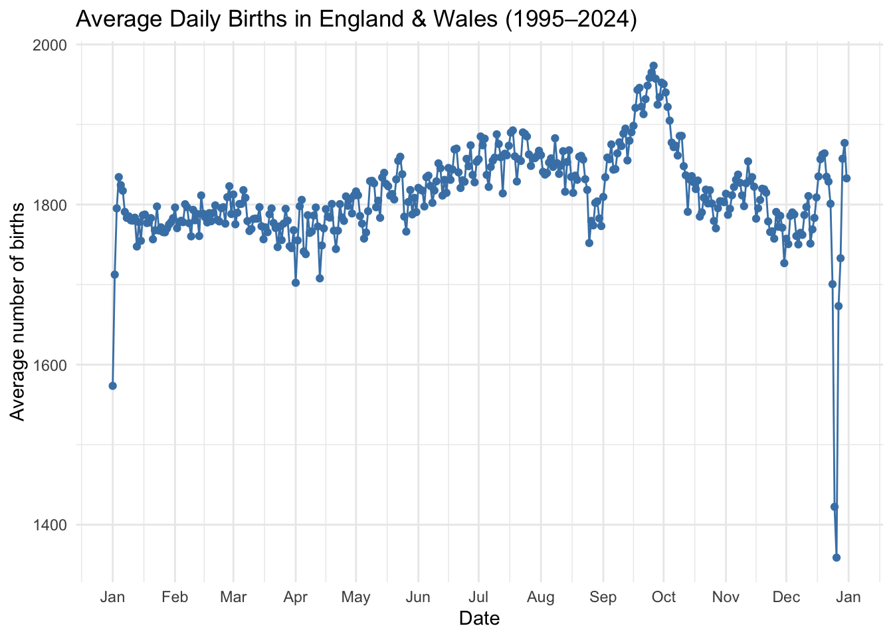
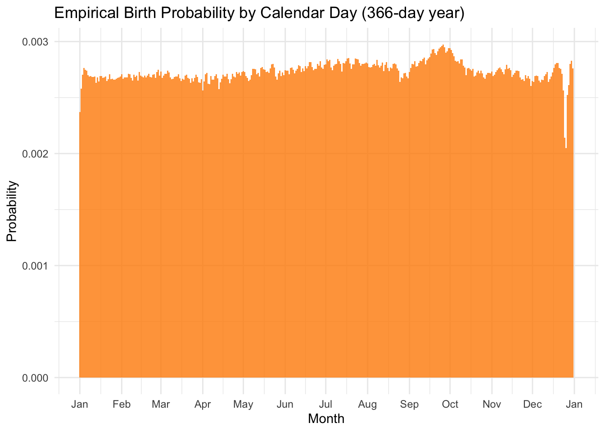

please show that cdf
\begin{aligned}
F(x) \begin{cases}
0
\quad & \text{if }x < a \\
\frac{x-a}{b-a}
\quad & \text{if } a \leq x < b \\
1
\quad & \text{if } x \geq b
\end{cases}
\end{aligned}
Case 1: x < a For t < a, f_X(t) = 0, so the integral from -\infty to x is zero:
Hoo Hey How (魚蝦蟹) is a traditional Southern Chinese dice game rooted in Hokkien culture and popularly played during festivals like Chinese New Year. Using three six-sided dice marked with symbols—typically fish, prawn, crab, gourd, rooster, and stag. Players place bets on a board featuring these icons. After the dice are rolled, payouts are awarded based on how many times a chosen symbol appears: 1:1 for one match, 2:1 for two, and 3:1 for three. This game is also popular in Vietnam called Bầu Cua Cá Cọp and Cambodia called Klah Klok.
Illustration of Hoo Hey How By Outlookxp - Own work, CC BY-SA 3.0, Link
Suppose that you bet 1 dollar on Crab. Let X denote the money you win (negative value represents a loss) from one trial of this game
What is the cumulative distribution function (cdf) of X
\begin{aligned}
F(x) \begin{cases}
0
\quad & \text{, when }x < -1 ;\\
\frac{125}{216}
\quad & \text{, when } -1 \leq x < 1 ;\\
\frac{25}{27}
\quad & \text{, when } 1 \leq x < 2 ;\\
\frac{215}{216}
\quad & \text{, when } 2 \leq x < 3 ;\\
1
\quad & \text{, when } x \geq 3. \\
\end{cases}
\end{aligned}
Question 5
“Pig”is a simple dice game in which two players take turns to roll a six-sided die, according to the following rule
If a player rolls a 1, the player scores nothing and it becomes the opponent’s turn.
If a player rolls any other number, it is added to his turn total and the player’s turn continues.
If the player instead chooses to hold, the turn total is accumulated to his or her score and it becomes the opponent’s turn.
The first player who scores 100 or more points wins
A simple tactic at the early stage of the game is called “hold at k strategy”, with which one should continue to roll whenever the turn total is less than k. What would be the wise choice on the value of k?
Given the current turn total is s what is the expected gain of rolling
The total optimal strategy actualyy varies based on your opponents’ situation.
Detailed discussion can be found in Neller and Presser (2005)
Question 6 Birthday probelm
What is the probability that at least two people share the same birthday in the classroom with size of 20 ?
When we examined this problem previously, we assumed:
365 days in a year
Every birthday is equally likely to happen
Assuming each individual’s birthday is independent and it is equal likely to give birth on each day what will be the potential distribution of everyone’s birthday
Uniform distribution (Either continuous and discrete is fine in this case)
What is the probability of all student’s birthday are different?
=0.59
What is the probability that at least two people share the same birthday in the classroom with size of 20 ?
So, let’s use this data to construct the empirical probability mass function (pmf). Then, we can re-estimate the probability that two people share the same birthday in a group of people.
Tasks
Load the data into R and visualize it.
library(tidyverse)
── Attaching core tidyverse packages ──────────────────────── tidyverse 2.0.0 ──
✔ dplyr 1.1.4 ✔ readr 2.1.5
✔ forcats 1.0.0 ✔ stringr 1.5.1
✔ ggplot2 4.0.0 ✔ tibble 3.2.1
✔ lubridate 1.9.4 ✔ tidyr 1.3.1
✔ purrr 1.0.2
── Conflicts ────────────────────────────────────────── tidyverse_conflicts() ──
✖ dplyr::filter() masks stats::filter()
✖ dplyr::lag() masks stats::lag()
ℹ Use the conflicted package (<http://conflicted.r-lib.org/>) to force all conflicts to become errors
library(lubridate) # Library for handeling datetime # 1. Load the datadata <-read_csv("Datasets/data.csv", col_types =cols(date =col_character(),average =col_double()))# Parse the date properly (day-month format, ggplot2 cannot accept date without year information)data <- data %>%mutate(date_parsed =dmy(paste(date, "2024")), month =month(date_parsed),day =day(date_parsed), )# Visualise daily average births0p1 <-ggplot(data, aes(x = date_parsed, y = average)) +geom_line(color ="steelblue") +geom_point( color ="steelblue") +scale_x_date(date_breaks ="1 month", date_labels ="%b") +labs(title ="Average Daily Births in England & Wales (1995–2024)",x ="Date", y ="Average number of births") +theme_minimal()p1

Construct the empirical pmf that a person is born on each day within a year.
# Account for leap years and compute total births per calendar day ----# Over 30 years (1995–2024): 7 leap years (1996,2000,2004,2008,2012,2016,2020,2024)data <- data %>%mutate(pmf_weight=average/sum(average) # Total births in the whole period)# Verify it sums to 1cat("PMF sums to:", sum(data$pmf_weight), "\n")
PMF sums to: 1
# Visualise the empirical distributionggplot(data, aes(x = date_parsed, y = pmf_weight)) +geom_col(fill ="darkorange", alpha =0.8, width =1) +scale_x_date(date_breaks ="1 month", date_labels ="%b") +labs(title ="Empirical Birth Probability by Calendar Day (366-day year)",x ="Month", y ="Probability") +theme_minimal()

Implement a simulation that generates 20 people their birthday based on the empirical pmf.
inverse_cdf <-function(u,pmf) { cdf_366 <-cumsum(pmf) # Get cdf day_indices<-1:366# day-of-year 1 … 366return(day_indices[which(cdf_366 >= u)[1]]) # first day where CDF exceeds u}inverse_cdf_vec <-Vectorize(inverse_cdf,vectorize.args ='u') # vectorization on u to facilitate speed computationdata$date_parsed[inverse_cdf_vec(runif(20),data$pmf_weight)]
Compare P\left( X \ge 2 \right) determined using the simple uniform model we used previously vs. the probability that is estimated using the empirical pmf.
simulation_amount=2000# Number of simulationclass_size=20# Number of students in each class (group size)# Step 1: Generate random birthdays using the INVERSE-CDF method# We generate 'simulation_amount × class_size' uniform random numbers U(0,1)# Then transform each U into a day-of-year using the empirical distributionbirthdays_matrix <-matrix(inverse_cdf_vec(runif(simulation_amount * class_size),data$pmf_weight), # generate n_sim × n_people uniforms → daysnrow = simulation_amount,ncol = class_size )# Step 2: Check for each simulated classroom whether at least two students# share the same birthday# We use: if number of unique birthdays < total students → at least two people have the same birthdaycheck_same_birthsday <-apply(birthdays_matrix,MARGIN=1,function(x) length(unique(x))<length(x))# Step 3: Estimate the probability# Proportion of simulated classrooms that had at least one shared birthdayprobability=sum(check_same_birthsday)/simulation_amountprobability
[1] 0.4085
References
Neller, Todd W, and Clifton GM Presser. 2005. “Pigtail: A Pig Addendum.”The UMAP Journal 26 (4).